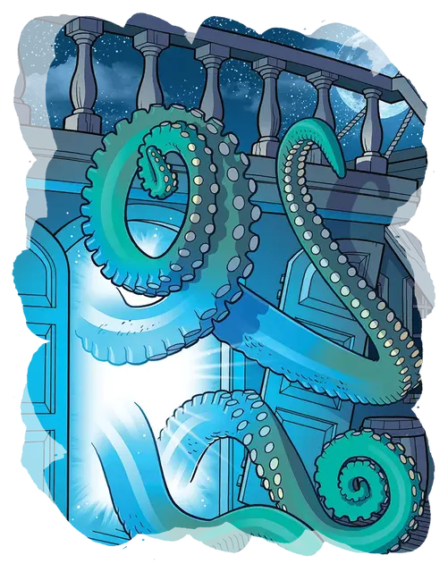

Квадропод хаоса
Chaos Quadrapod
Большая Аберрация, хаотично-злая

Класс Доспеха 14 (природный доспех)
Хиты 52 (7к10 + 14)
Скорость 40 футов, лазая 40 футов
| мод | спас | ||
|---|---|---|---|
| СИЛ | 18 | +4 | +4 |
| ЛОВ | 13 | +1 | +1 |
| ТЕЛ | 15 | +2 | +2 |
| мод | спас | ||
|---|---|---|---|
| ИНТ | 6 | −2 | −2 |
| МДР | 10 | +0 | +0 |
| ХАР | 4 | −3 | −3 |
Навыки Акробатика +5, Восприятие +4
Чувства слепое зрение 120 футов (слеп за его пределами), пассивное Восприятие 14
Опасность 4 (1100 опыта)
Бонус мастерства +2
Особенности
Сопротивление магии. Квадропод совершает с преимуществом спасброски от заклинаний и прочих магических эффектов.
Действия
Мультиатака. Квадропод хаоса совершает до двух атак Щупальцами.
Щупальца. . Рукопашная атака оружием: +6 к попаданию, досягаемость 15 футов, одна цель. Попадание: 10 (2к6 + 3) дробящего урона. Если цель — существо, она становится захваченной (Сл высвобождения 14). Пока цель схвачена, она опутана, а квадропод не может использовать щупальца на другой цели.
Облако хаоса (Перезаряжается после короткого или продолжительного отдыха). Квадропод хаоса выпускает сгусток клубящегося эфирного света, который взрывается в точке, которую он может видеть в пределах 60 футов от себя. Каждое существо в сфере радиусом 20 футов с центром в этой точке должно преуспеть в спасброске Харизмы Сл 14, иначе станет ошеломлённым до конца своего следующего хода.
Описание
Скопление четырёх щупалец с присосками и пульсирующей массой эфирного света в качестве центрального тела, квадропод хаоса является существом из Дальнего предела, и он направляет беспорядочную силу этого плана, уничтожая все на своем пути. Квадропод совершает маневр, выбрасывая свои покрытые слизью щупальца и волоча себя вперед, издавая ужасный чавкающий звук, когда он неумолимо приближается к своей добыче.